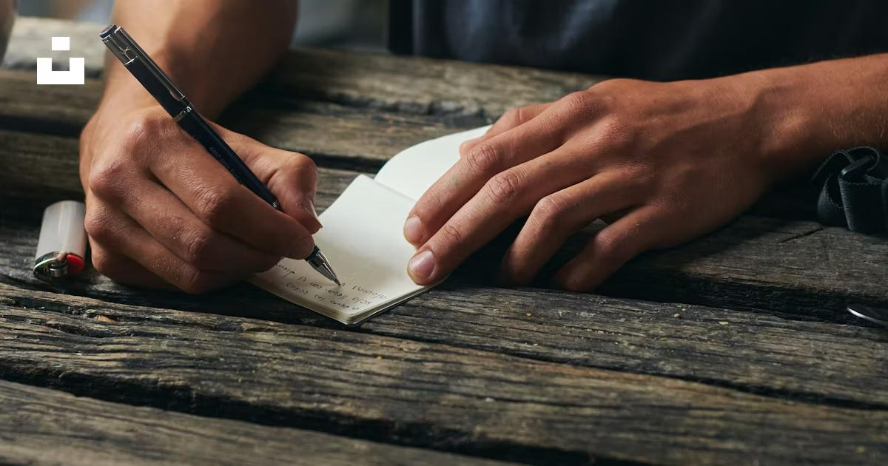
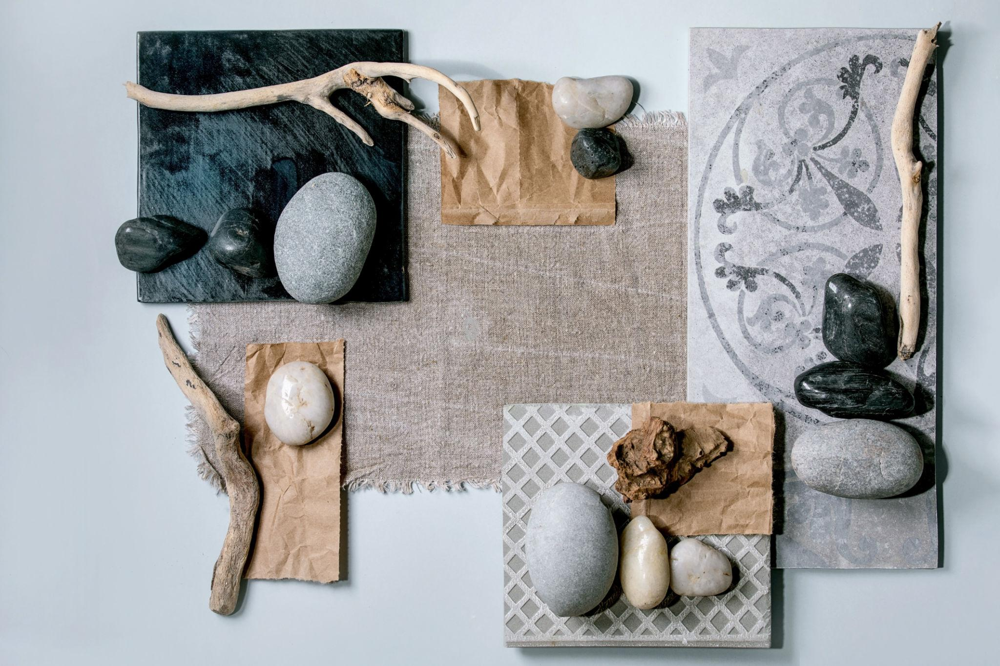
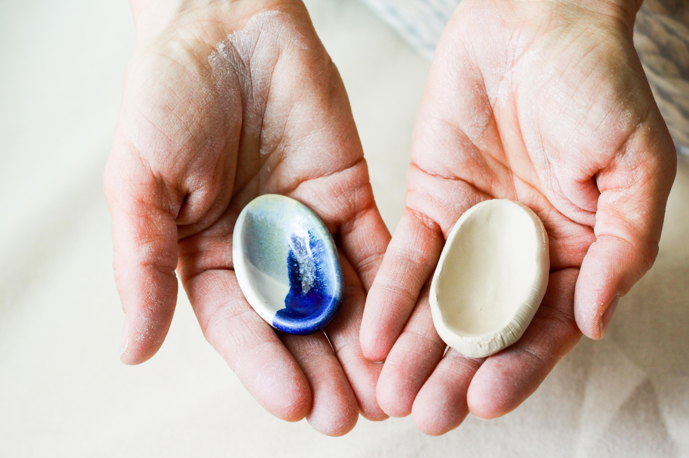

Когда заканчивается «мы»
Расставание — это не всегда момент, когда один человек уходит, а другой остаётся. Иногда отношения заканчиваются задолго до последнего разговора. И тогда приходится прощаться не только с человеком, но и с общими планами, маленькими ритуалами, представлением о будущем. Можно понимать, почему отношения закончились, и всё равно скучать. Можно испытывать облегчение и одновременно горевать о том, что не получилось. Расставание не отменяет того, что между вами было. Но и то, что было, не обязывает тебя оставаться в прошлом.
Материалы и практики

То, что осталось невысказанным
Возьми бумагу и напиши письмо человеку, с которым завершились отношения. Не старайся быть справедливой или правильно подбирать слова. Можно написать о любви, злости, благодарности, разочаровании. Затем обрати внимание, какие слова оказались самыми важными. Отправлять письмо не нужно.
Продолжить практику →
Зачем это упражнение: чтобы в собственном темпе исследовать переживания через действие, образы или слова — без требования получить правильный результат.
- Подготовь удобное место и материалы, названные в описании. Можно остановиться в любой момент.
- Выполни упражнение, описанное выше, не торопясь и замечая, какие решения хочется принимать по ходу.
- Посмотри на получившееся. Что оказалось важным? Что хочется сохранить, изменить или оставить без ответа?

Между нами
Выбери два предмета: один будет обозначать тебя, другой — человека, с которым ты рассталась. Расположи их так, как сейчас ощущаются ваши отношения. Добавь предметы для воспоминаний, чувств и границ. Затем найди для своего предмета место, в котором ему достаточно пространства.
Продолжить практику →
Зачем это упражнение: чтобы в собственном темпе исследовать переживания через действие, образы или слова — без требования получить правильный результат.
- Подготовь удобное место и материалы, названные в описании. Можно остановиться в любой момент.
- Выполни упражнение, описанное выше, не торопясь и замечая, какие решения хочется принимать по ходу.
- Посмотри на получившееся. Что оказалось важным? Что хочется сохранить, изменить или оставить без ответа?

Моя собственная форма
Из глины или пластилина создай форму, которая будет обозначать тебя сегодняшнюю. Подумай, какие части твоей жизни существуют независимо от отношений: интересы, способности, мечты, ценности, важные люди. Можно добавлять новые элементы по мере того, как вспоминаешь их.
Продолжить практику →
Зачем это упражнение: чтобы в собственном темпе исследовать переживания через действие, образы или слова — без требования получить правильный результат.
- Подготовь удобное место и материалы, названные в описании. Можно остановиться в любой момент.
- Выполни упражнение, описанное выше, не торопясь и замечая, какие решения хочется принимать по ходу.
- Посмотри на получившееся. Что оказалось важным? Что хочется сохранить, изменить или оставить без ответа?
Интерактивная заметка
Здесь можно записать свои мысли. Нажми «Скачать заметку», чтобы сохранить её только на своём устройстве. Записи не отправляются на сайт.
Индивидуальная поддержка
На индивидуальной встрече можно исследовать переживания в собственном темпе, без необходимости приходить с готовыми ответами. Поддержка строится вокруг твоей ситуации и потребностей.
Познакомиться со специалистами →Группы и встречи
«После нас» — концепция поддерживающей арт-терапевтической группы. Через творчество, работу с материалами и разговор участники могут исследовать свой опыт. Даты и условия участия пока не определены.
Подробнее о группах →В завершение
Иногда самым трудным оказывается не отпустить другого человека, а снова услышать себя. Не обязательно торопиться с прощением или забыванием. Для твоей собственной жизни постепенно появляется место.